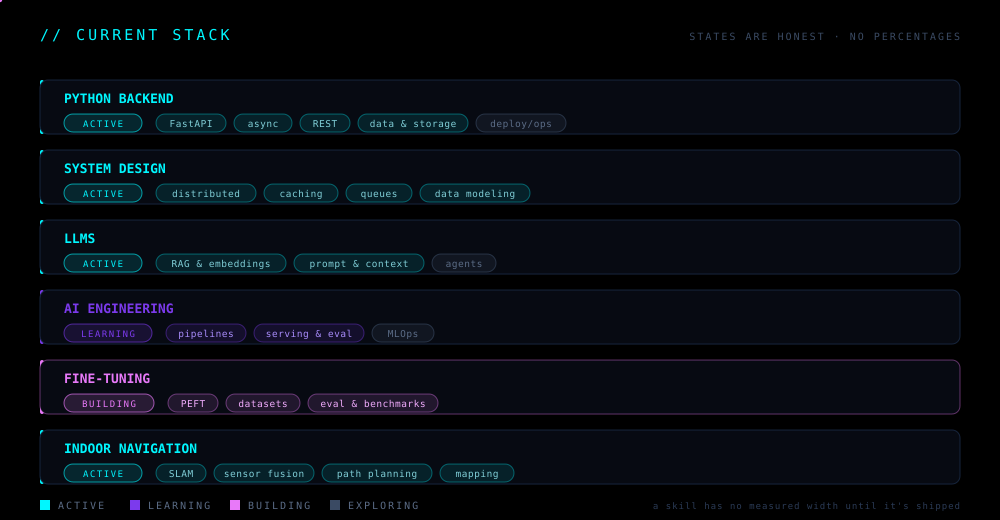
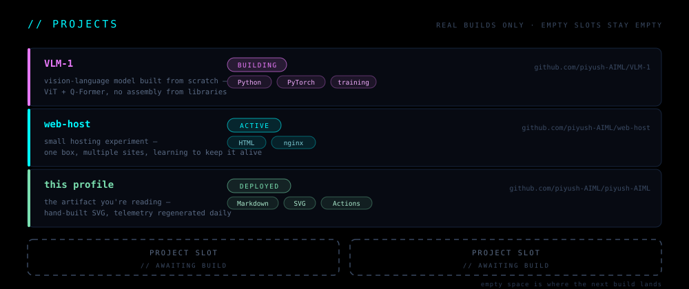
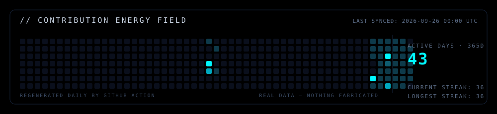
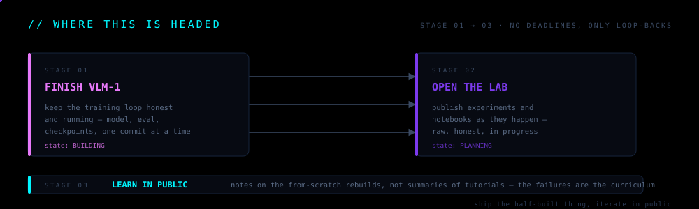

README.md on github.com. Serve with: python3 -m http.server
then open http://localhost:8000/preview.html.

STUDENT · BUILDER · LEARNING BY BUILDING
BOOT SEQUENCE

LEARNING CONSTELLATION

The real workflow, drawn as a graph: design → train → serve → monitor, with fast async pulses traveling every edge — real systems breathe, and so does this one.
CURRENT STACK

Every module runs. Every state is honest — ACTIVE is what I use daily, LEARNING is what I'm deliberately deepening, BUILDING is what's hot right now. Current obsessions: RAG that actually retrieves, models that know what they don't know, and a robot that finds its way home.
PROJECTS

The empty slots are not a design gap — they're the contract. Empty space is where the next build lands.
TELEMETRY

regenerated daily by a GitHub Action · real data only · timestamped in-image
WHERE THIS IS HEADED

No deadlines — only loop-backs: build, measure, break, rebuild. The pulse keeps moving.
REACH
- GitHub — piyush-AIML (one channel for now)